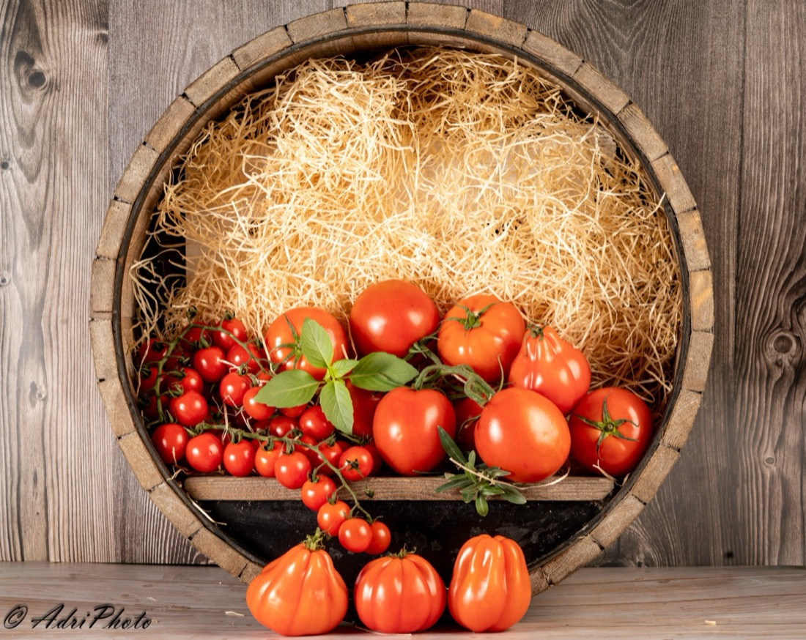
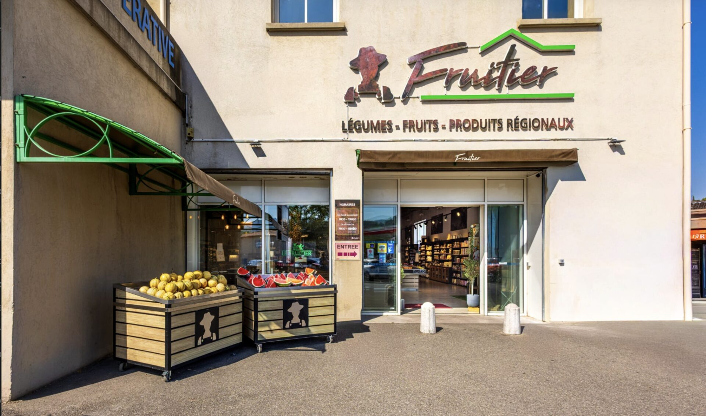

Le blog du Fruitier
conseils, saisons & actualités
Les arrivages du moment, nos conseils pour bien choisir et conserver vos produits, nos idées cadeaux et la vie de la boutique à La Destrousse.

· 2 min de lecture
Nos miels artisanaux de Provence
Lavande, thym, garrigue… Des miels récoltés par nos apiculteurs partenaires. La Provence dans un pot.
 Dégustation
Dégustation· 2 min de lecture
Nouveaux millésimes en cave
Notre cave s'enrichit. Rosés, blancs et rouges de Provence : nos conseils pour choisir et servir vos vins.

Saison· 3 min de lecture
Les légumes d'été sont arrivés
Tomates, courgettes, aubergines… Comment bien les choisir, les conserver et les cuisiner tout l'été.
 Événement
Événement· 2 min de lecture
On fête les mères chez Le Fruitier !
Un bijoutier de la région en boutique, des paniers garnis et nos idées de cadeaux gourmands pour gâter votre maman.
Le meilleur de la Provence vous attend
à La Destrousse
Fruits et légumes du jour, épicerie fine, vins et paniers garnis sur mesure : passez en boutique ou contactez-nous pour préparer votre commande.
